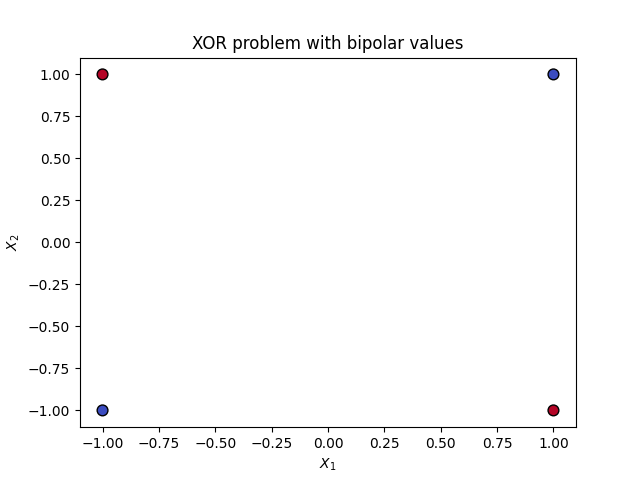
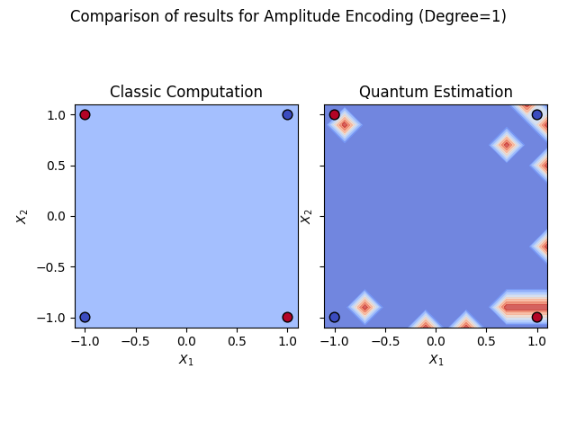

Note
Click here to download the full example code
Kernels¶
This tutorial aims to explain and visualize the kernels obtained from the data encoding methods implemented in the package.
Introduction¶
As described in the Data Encodings tutorial, the encoding methods can be interpreted as feature maps of the form:
Where the input \(x\) is mapped from the input space into the feature space.
The inner product of two inputs mapped to feature space defines a kernel via:
Where \(\left<.,.\right>_\mathcal{F}\) is the inner product defined on \(\mathcal{F}\). [SK19]
In this case, as the inputs are being mapped into quantum states, the kernel defined is of the form:
Because of this, the encoding methods can be used to define kernels with the inner product and use this with machine learning algorithms such as Support-Vector Machines (SVMs).
Two methods have been defined in this package, classic_kernel and quantum_kernel, in order to use the kernels defined by the encoding methods with implementations of SVMs such as sklearn’s. These methods compute the Gram matrix of the input set of vectors.
Throughout this tutorial, both the classical computation and quantum estimation of the kernels will be tested, so the quantum backend will be initialized with one of the simulators provided by Qiskit.
from skqlearn.utils import JobHandler
from skqlearn.encoding import *
import matplotlib.pyplot as plt
import numpy as np
from qiskit.providers.aer import AerSimulator
from sklearn.svm import SVC
JobHandler().configure(backend=AerSimulator(), shots=10000)
Basis Encoding¶
Basis Encoding’s feature map was:
Therefore, the kernel defined by the inner product is:
With \(\delta\) being the Kronecker delta.
Therefore, when computing the Gram matrix of a set of vectors, the expected result would be the identity matrix.
x = np.array([[1], [2], [3], [4]])
print('Gram matrix with classical computation:')
print(BasisEncoding().classic_kernel(x, x))
print('Gram matrix with quantum computation:')
print(BasisEncoding().quantum_kernel(x, x))
Out:
Gram matrix with classical computation:
[[1. 0. 0. 0.]
[0. 1. 0. 0.]
[0. 0. 1. 0.]
[0. 0. 0. 1.]]
Gram matrix with quantum computation:
[[ 1.00e+00 -1.54e-02 1.80e-02 7.40e-03]
[ 1.30e-02 1.00e+00 -2.18e-02 8.00e-04]
[ 8.20e-03 8.00e-03 1.00e+00 -1.80e-03]
[-1.00e-02 -2.30e-02 -6.60e-03 1.00e+00]]
Amplitude Encoding¶
Amplitude Encoding’s feature map was:
Therefore, the kernel defined by the inner product is the linear kernel:
Because Amplitude Encoding is limited to normalized data, it can only be used with points in the unit circle (when working in 2D).
angles = np.arange(0, 2 * np.pi - 0.1, step=np.pi / 6)
x = np.array([[np.cos(a), np.sin(a)] for a in angles])
y = np.array([*[0]*6, *[1]*6])
X0, X1 = x[:, 0], x[:, 1]
plt.scatter(X0, X1, c=y, cmap=plt.cm.coolwarm, s=60, edgecolors='k')
plt.show()
clf_amp_c = SVC(kernel=AmplitudeEncoding(degree=1).classic_kernel).fit(x, y)
clf_amp_q = SVC(kernel=AmplitudeEncoding(degree=1).quantum_kernel).fit(x, y)
fig, (ax1, ax2) = plt.subplots(1, 2)
fig.suptitle('Amplitude Encoding')
ax1.set_title('Classic')
ax2.set_title('Quantum')
ax1.scatter(X0, X1, c=clf_amp_c.predict(x), cmap=plt.cm.coolwarm, s=60,
edgecolors='k')
ax2.scatter(X0, X1, c=clf_amp_q.predict(x), cmap=plt.cm.coolwarm, s=60,
edgecolors='k')
plt.show()
- 
- 
Because the next encodings can be applied to generic points in 2D space, a couple of utility functions will be defined to help with the visualization of the results. Specifically, they will be used to visualize the decision boundaries of the SVM.
def make_meshgrid(x, y, h=.02, border=.25):
x_min, x_max = x.min() - border, x.max() + border
y_min, y_max = y.min() - border, y.max() + border
xx, yy = np.meshgrid(np.arange(x_min, x_max, h),
np.arange(y_min, y_max, h))
return xx, yy
def plot_contours(ax, clf, xx, yy, **params):
Z = clf.predict(np.c_[xx.ravel(), yy.ravel()])
Z = Z.reshape(xx.shape)
out = ax.contourf(xx, yy, Z, **params)
return out
def plot_comparison(title, clf_c, clf_q, X0, X1):
xx, yy = make_meshgrid(X0, X1, 0.1)
fig, (ax1, ax2) = plt.subplots(1, 2)
fig.suptitle(title)
ax1.set_title('Classic')
ax2.set_title('Quantum')
plot_contours(ax1, clf_c, xx, yy, cmap=plt.cm.coolwarm, alpha=0.8)
plot_contours(ax2, clf_q, xx, yy, cmap=plt.cm.coolwarm, alpha=0.8)
ax1.scatter(X0, X1, c=y, cmap=plt.cm.coolwarm, s=60, edgecolors='k')
ax2.scatter(X0, X1, c=y, cmap=plt.cm.coolwarm, s=60, edgecolors='k')
plt.show()
In order to use a simple example which is not linearly separable, the proposed data for the SVM to classify is the XOR problem.
Expanded Amplitude Encoding¶
Expanded Amplitude Encoding’s feature map was identical to regular Amplitude Encoding’s. The only difference being that the input vectors were expanded with an extra component with value 1.
This means that with degree equal to 1, the kernel defined was the linear kernel.
clf_expamp_c = SVC(kernel=ExpandedAmplitudeEncoding(degree=1).classic_kernel).\
fit(x, y)
clf_expamp_q = SVC(kernel=ExpandedAmplitudeEncoding(degree=1).quantum_kernel).\
fit(x, y)
plot_comparison('Expanded Amplitude Encoding (Degree=1)', clf_expamp_c,
clf_expamp_q, X0, X1)
As it can be seen, the kernel is not strictly the linear kernel in 2D. If it was, the decision boundary would be a straight line. The reason behind this is that the kernel is linear in 3D (the real dimension of the expanded vectors), and therefore the decision boundary is a plane. What is being shown in the 2D plot is just the proyection of the plane into a 2D line. This can be seen more clearly when observing how the data is mapped in 3D space.
from mpl_toolkits import mplot3d
x_3d = np.array([ExpandedAmplitudeEncoding().encoding(x[i, :])
for i in range(x.shape[0])])
X0_3d, X1_3d, X2_3d = x_3d[:, 0], x_3d[:, 1], x_3d[:, 2]
fig = plt.figure()
ax = plt.axes(projection='3d')
ax.scatter3D(X0_3d, X1_3d, X2_3d, c=y, cmap=plt.cm.coolwarm, s=60,
edgecolors='k')
plt.show()
When changing the degree of the encoding (copies of the quantum state), the kernel defined changes to a polynomial kernel of the form:
With a higher degree, the problem at hand becomes linearly separable, as the input vectors are being expanded into a higher dimension. This is one of the main features of SVMs and kernels, commonly refered to as the kernel trick.
clf_expamp_c = SVC(kernel=ExpandedAmplitudeEncoding(degree=4).classic_kernel).\
fit(x, y)
clf_expamp_q = SVC(kernel=ExpandedAmplitudeEncoding(degree=4).quantum_kernel).\
fit(x, y)
plot_comparison('Expanded Amplitude Encoding (Degree=4)', clf_expamp_c,
clf_expamp_q, X0, X1)
Angle Encoding¶
Angle Encoding’s feature map was:
The kernel defined by the inner product is a cosine kernel:

Total running time of the script: ( 1 minutes 1.330 seconds)